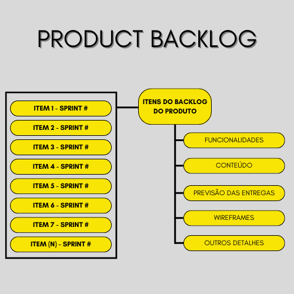

Artefatos de Scrum ágil são informações que as equipes Scrum e as partes interessadas usam para detalhar o produto que está sendo desenvolvido, as ações para a produção dele e as ações realizadas durante o projeto. Esses artefatos oferecem pontos de metadados que informam sobre o desempenho de um sprint. Eles são ferramentas essenciais para todas as equipes Scrum, pois viabilizam os principais atributos do Scrum de transparência, inspeção e adaptação.